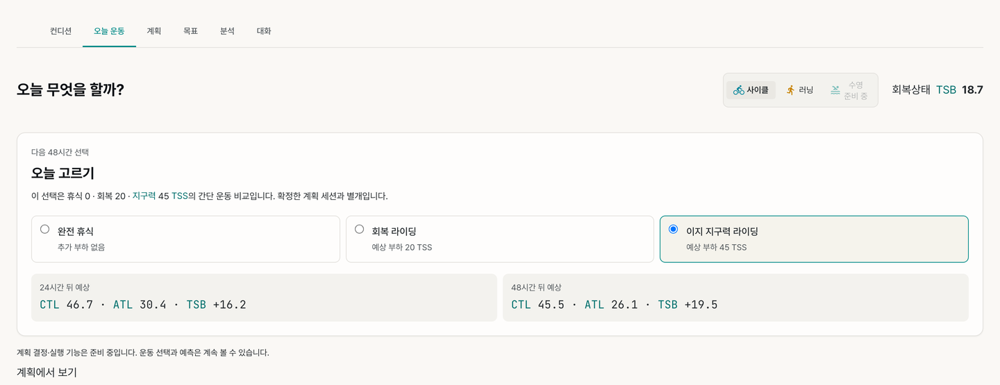
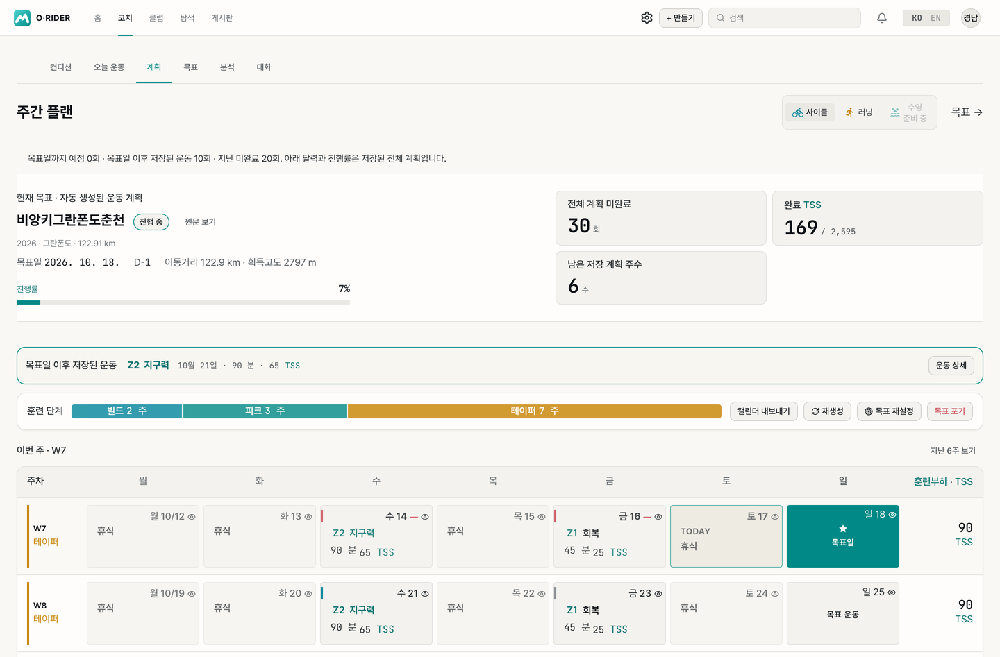
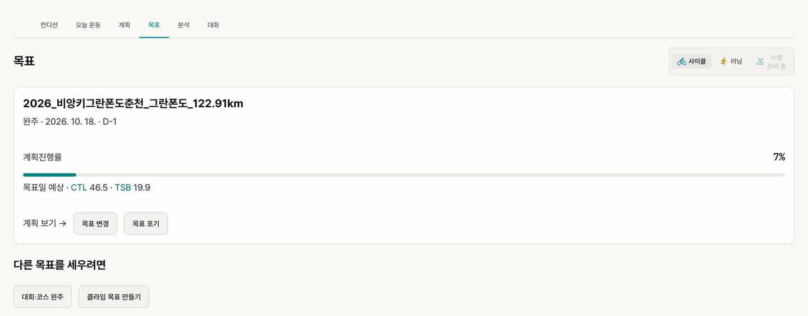

7. 코치 — 오늘 운동·계획·목표·대화
이 장에서 할 수 있는 것
- 코치 메뉴의 탭 6개가 각각 무엇을 하는지 압니다.
- 목표(대회·코스, 오르막, 러닝 대회, 30분 달리기)를 세우고, 자동으로 만들어진 주간 계획을 따라갑니다.
- 오늘 할 운동을 고르고, AI 코치에게 내 기록을 바탕으로 질문합니다.
7.1 코치 탭 6개 한눈에 보기
| 탭 | 질문 | 설명서 |
|---|---|---|
| 컨디션 | "내 체력이 올라가고 있나? 오늘 쉬어야 하나?" | 6.1 |
| 오늘 운동 | "오늘 무엇을 할까?" | 7.2 |
| 계획 | "목표일까지 이번 주에 무엇을 하나?" | 7.3 |
| 목표 | "무엇을 향해 훈련하나?" | 7.4 |
| 분석 | "파워 커브·훈련 존은 어떤가?" | 6.3 |
| 대화 | "AI 코치와 나눈 질문과 답" | 7.6 |
코치 화면 오른쪽 아래에는 늘 코치에게 묻기 버튼이 떠 있습니다. 지금 보고 있는 화면에 대해 바로 물어볼 수 있습니다.
7.2 오늘 운동 — 다음 48시간 고르기

따라 하기
- 코치 > 오늘 운동을 엽니다. 제목은 "오늘 무엇을 할까?", 오른쪽에 지금 회복상태 TSB가 보입니다.
- 종목 칩(사이클 · 러닝)을 고릅니다.
- 오늘 고르기에서 세 가지 중 하나를 눌러 봅니다 — 완전 휴식(추가 부하 없음) · 회복 라이딩(예상 부하 20 TSS) · 이지 지구력 라이딩(예상 부하 45 TSS).
- 아래 24시간 뒤 예상 · 48시간 뒤 예상의 CTL · ATL · TSB가 어떻게 바뀌는지 비교합니다.
이 선택은 미리 견줘 보는 "간단 운동 비교"이며, 계획에 저장된 운동과 별개입니다. 화면 아래 안내처럼 계획 결정·실행 기능은 준비 중입니다. 실제 계획은 계획에서 보기로 코치 > 계획에서 확인하세요.
7.3 계획 — 주간 플랜 따라가기

따라 하기
- 코치 > 계획을 엽니다. 제목은 주간 플랜입니다. 목표가 없으면 먼저 7.4에서 목표를 만드세요.
- 맨 위에서 현재 목표 이름, 목표일과 D-day, 진행률을 봅니다.
- 훈련 단계 막대(빌드 · 피크 · 테이퍼)에서 지금 어느 단계인지 봅니다.
- 아래 이번 주 표에서 요일별 운동을 봅니다. 지난 주는 지난 6주 보기로 펼칩니다.
- 날짜 칸을 누르면 그날의 운동 상세와 관리 버튼이 나옵니다.
화면 읽는 법
| 표시 | 뜻 |
|---|---|
| 위쪽 안내 줄 | "목표일까지 예정 N회 · 목표일 이후 저장된 운동 N회 · 지난 미완료 N회"처럼 저장된 계획 전체의 상태 |
| 오른쪽 숫자 카드 | 전체 계획 미완료(회), 완료 TSS / 전체 TSS, 남은 저장 계획 주수 |
| 예정 운동 띠 | 가장 가까운 예정 운동(예: Z2 지구력 · 90분 · 65 TSS)과 운동 상세. 띠 제목은 상황에 따라 "다음 운동" 또는 "목표일 이후 저장된 운동"으로 바뀝니다. |
| 칸 안의 "Z2 지구력 90분 65 TSS" | 강도 존 · 시간 · 예상 훈련 부하. 존은 Z1 회복 · Z2 지구력 · Z3 템포 · Z4 역치 · Z5 VO2입니다. |
| 휴식 | 쉬는 날 |
| TODAY | 오늘 |
| ★ 목표일 | 대회·목표 날짜 |
| 칸 왼쪽 색 막대, 날짜 옆 빨간 "—" | 강도 색, 그리고 지나갔는데 완료하지 않은 운동 |
| "조정" 칩 | 최근 실행 결과에 맞춰 강도를 바꾼 날. 마우스를 올리면 "지난 주 부하가 부족해 다음 주 강도를 ○○%로 낮췄습니다" 같은 이유가 나옵니다. |
| 맨 오른쪽 훈련부하 · TSS | 그 주의 계획 부하 합계 |
날짜 칸을 눌러 할 수 있는 것
- 완료 표시 / 완료 취소, 건너뛰기 / 건너뛰기 취소
- 워크아웃 변경, 이전 날과 교환 · 다음 날과 교환
- 연결된 활동 보기, 워크아웃 파일 가져오기(.zwo · .erg · .mrc, 최대 1MB)
활동이 연결됐거나 실행 결과가 기록된 날은 완료·건너뛰기를 손으로 바꿀 수 없습니다. 러닝의 완료·건너뛰기는 활동 연결과 실행 결과로 관리됩니다.
위쪽 관리 버튼
| 버튼 | 하는 일 |
|---|---|
| 캘린더 내보내기 | 계획을 캘린더 파일로 내려받아 휴대폰·구글 캘린더 등에 넣습니다. |
| 재생성 | 앞으로의 일정을 다시 만듭니다. 완료한 운동은 그대로 남습니다. |
| 목표 재설정 | 목표를 다시 정합니다. |
| 목표 포기 | 지금 목표를 끝냅니다. 기록은 남습니다. |
최근 4주 실행률이 크게 떨어지거나 여러 주 연속 계획을 벗어나면 위쪽에 안내가 뜹니다. 지금 재생성으로 남은 일정을 다시 짜거나 1주 동안 보지 않기로 미룹니다.
7.4 목표 — 세우기 · 바꾸기 · 포기하기

지금 목표 보기
코치 > 목표를 열면 지금 목표 카드에 목표 이름, 종류(완주 · 시간 목표 · 대회 목표 · 오르막 기록 · 러닝 프로그램), 목표일과 D-day, 계획진행률, 목표일 예상(그날의 CTL · TSB)이 보입니다. 카드 아래 계획 보기 → · 목표 변경 · 목표 포기가 있습니다.
새 목표 세우기 — 따라 하기
- 코치 > 목표에서 종목 칩을 고릅니다. 수영은 아직 "준비 중"입니다.
- 다른 목표를 세우려면(목표가 없으면 새 목표 만들기)에서 종류를 고릅니다.
- 사이클: 대회·코스 완주, 클라임 목표 만들기(오르막을 정한 시간·W/kg로 오르기)
- 러닝: 러닝 대회, 30분 달리기 프로그램
- 안내에 따라 코스·대회, 목표일, 목표 유형(완주 · 목표 시간 등), 주당 운동 횟수를 넣습니다.
- 목표 설정 확인 화면에서 내용을 확인합니다. 아직 저장되지 않은 상태이며, 시작하기를 눌러야 서버가 목표와 운동 계획을 만듭니다.
- 만들어지면 코치 > 계획에 빌드 → 피크 → 테이퍼 순서의 주간 계획이 생깁니다.
이미 목표가 있을 때 새 목표를 시작하면 지금 목표는 포기 처리됩니다. 화면에 "지금 목표(○○)는 새 목표 시작 시 포기 처리됩니다"가 나옵니다.
목표 달성 가능성 읽기
목표를 세울 때 지금 실력(사이클 FTP, 러닝 임계 페이스)과 목표를 견줘 네 단계로 알려 줍니다.
| 표시 | 뜻 |
|---|---|
| 여유 있음 | 지금 실력으로 넉넉합니다. |
| 적정 | 꾸준히 운동하면 이룰 수 있습니다. |
| 도전적 | 규칙적인 계획이 꼭 필요합니다. |
| 무리 | 지금 실력으로는 어렵습니다. 목표 시간을 늘리거나 기간을 더 확보하세요. |
기준값을 입력하지 않았다면 가정값 시작값으로 판정하고 그 표시가 붙습니다. 판정을 믿으려면 먼저 훈련 기준값을 넣으세요(6.5). 판정은 참고값이며 완주나 기록을 보장하지 않습니다.
예: 10km를 60분에 달리는 목표의 평균 페이스는 6:00/km입니다. 처음 달리기를 시작한다면 기록보다 완주 목표와 지킬 수 있는 일정부터 정하세요. 실제 러닝 기록은 앱에서 합니다(앱 설명서).
7.5 분석 — 깊은 차트
코치 > 분석은 옛 피트니스 화면의 깊은 차트를 모아 둔 곳입니다. 제목 아래 "90일 실적 + 39일 예측"처럼 실제 기록 기간과 앞으로의 예측 기간이 함께 적혀 있습니다. 더 깊이 보기 — 일별 부하·파워 커브·훈련 존을 펼쳐 파워 커브, 일별 운동 부하, 훈련 존을 봅니다. 읽는 법은 6.3 파워 커브를 보세요.
7.6 대화 — AI 코치에게 묻기
따라 하기
- 코치 화면 오른쪽 아래 코치에게 묻기, 또는 코치 > 대화의 AI 코치에게 물어보기를 누릅니다.
- 궁금한 것을 적어 보냅니다. 코치는 내 기록·컨디션·계획을 근거로 답합니다.
- 지난 질문과 답은 코치 > 대화의 저장된 대화에서 다시 열고 이어서 물을 수 있습니다.
AI 코치는 하루에 쓸 수 있는 횟수가 정해져 있으며, 화면에서 오늘의 사용 가능 횟수를 확인합니다. 질문과 답은 대화나 계정을 지울 때까지 내 계정에 저장됩니다. 답변에 필요한 개인 운동 데이터를 외부 AI 처리자에게 보내므로, 처음 쓸 때 설정 > 계정의 AI 코치 데이터 처리 동의가 필요합니다.
"대화 내역을 불러오지 못했습니다"가 나오면 인터넷 연결이나 광고 차단 같은 확장 프로그램을 확인한 뒤 다시 시도를 누르세요.
7.7 계획에 쓰이는 숫자 — TSS · rTSS · CTL · ATL · TSB
| 용어 | 쉬운 뜻 |
|---|---|
| TSS (훈련 스트레스 점수) | 운동 하나가 몸에 준 부하. FTP 강도로 1시간 타면 약 100입니다. 길고 강할수록 커집니다. |
| rTSS (러닝 부하) | 러닝의 페이스·고도로 계산한 부하. 심박으로 계산하면 "심박 기반 러닝 부하"로 표시됩니다. 사이클 TSS와 계산 근거가 다르니 같은 종목 안의 추세로 보세요. |
| CTL (장기체력) | 최근 약 6주의 부하를 고르게 평균 낸 값. 계획의 "목표일 예상 CTL"은 계획대로 했을 때 그날의 체력입니다. |
| ATL (단기피로) | 최근 약 1주의 부하. 강한 주에 빠르게 오르고 쉬면 빠르게 내려갑니다. |
| TSB (회복상태) | CTL − ATL. 대회 직전 테이퍼 기간에는 TSB를 양수로 끌어올리는 것이 보통입니다. |
사이클·러닝 부하는 하나의 통합 체력(CTL)으로 합쳐지며, 코치 > 컨디션의 통합 칩에서 종목별 몫을 나눠 볼 수 있습니다(8.4). 더 많은 용어는 용어집을 보세요.
7.8 자주 막히는 점
| 이럴 때 | 확인할 것 |
|---|---|
| 계획 화면이 비어 있어요 | 목표가 있는지(코치 > 목표), 선택한 종목 칩이 목표 종목과 같은지 |
| 운동했는데 계획이 "완료"로 안 바뀌어요 | 그 활동이 웹에 들어왔는지, 같은 날짜·종목인지. 운동일지의 계획 표시(✓ · △ · !)도 보세요. |
| 달성률이 낮게 나와요 | 운동을 안 했다는 뜻이 아닐 수 있습니다. 계획 TSS에 비해 실제 부하가 적었거나, 부하가 추정값일 수 있습니다. |
| 오늘 운동에서 고른 것이 저장되지 않아요 | 오늘 고르기는 비교용이며, 계획 결정·실행 기능은 준비 중입니다. |